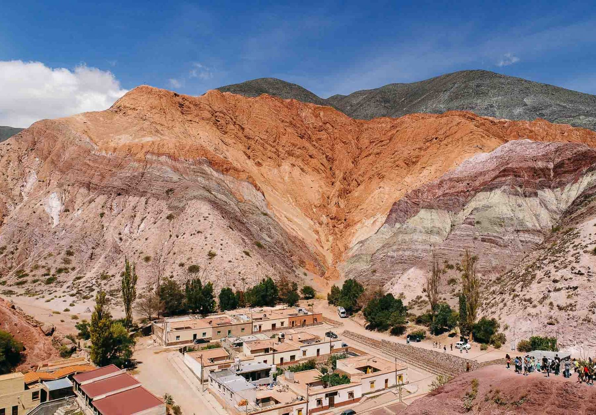
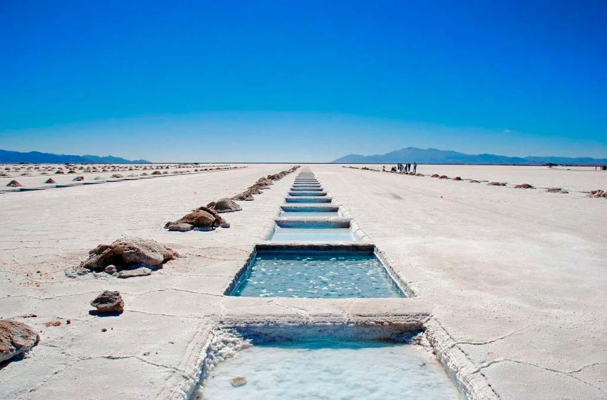
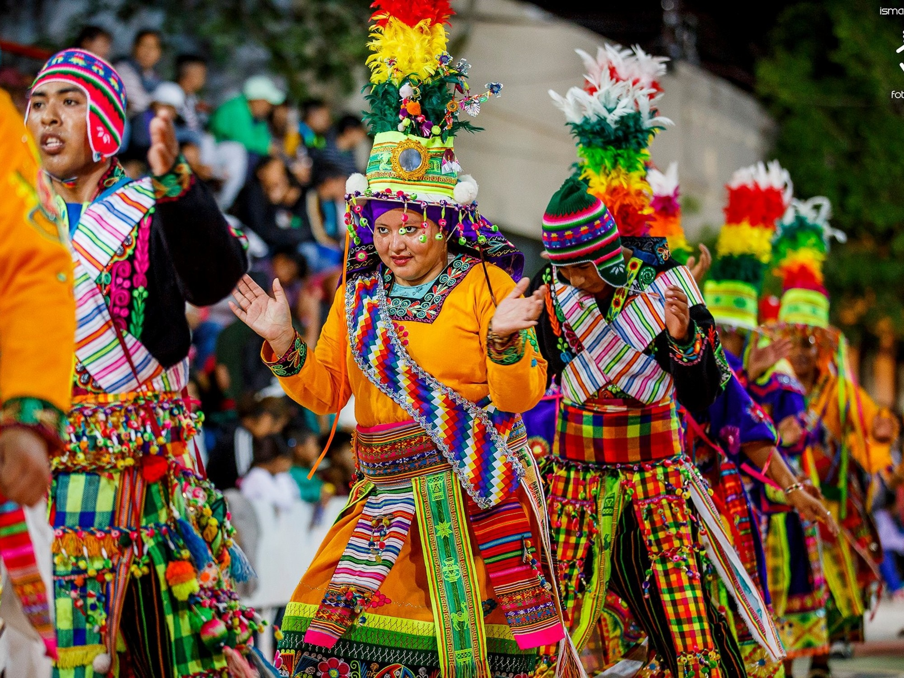

Quebrada de Humahuaca
Patrimonio de la Humanidad por la UNESCO, este valle montañoso de increíbles colores se extiende por 155 km. Destacan el Cerro de los Siete Colores en Purmamarca y el Pucará de Tilcara.
Descubrí la magia del norte argentino con un paquete especial de 5 días y 4 noches.
Desde $700 USD por persona.
¡Reservar ahora!
Patrimonio de la Humanidad por la UNESCO, este valle montañoso de increíbles colores se extiende por 155 km. Destacan el Cerro de los Siete Colores en Purmamarca y el Pucará de Tilcara.

Un impresionante desierto de sal a 3,450 metros sobre el nivel del mar que se extiende por 212 km². Un paisaje surrealista donde el blanco inmaculado de la sal crea un efecto espejo con el cielo.
Jujuy fue fundada en 1593 por Francisco de Argañaraz y Murguía como un punto estratégico entre el Virreinato del Perú y el Río de la Plata. Su territorio fue habitado originalmente por los omaguacas, quebradeños y otros pueblos originarios. Durante la independencia, fue escenario del Éxodo Jujeño en 1812, cuando el pueblo jujeño, liderado por Belgrano, realizó una retirada estratégica quemando todo a su paso para no dejar provisiones a los realistas. Hoy es conocida por su rica cultura andina y sus impresionantes paisajes.

El carnaval más famoso del norte argentino, con raíces en tradiciones indígenas. Comienza con el desentierro del diablo carnavalero y dura 9 días de festejos con comparsas, música coplera y bailes tradicionales. Los participantes usan disfraces coloridos y juegan con harina, serpentinas y agua. Una celebración llena de alegría, música y tradiciones ancestrales.
Jujuy tiene un clima variado según la altitud, desde templado en los valles hasta frío en las zonas altas.
| Estación | Temperatura promedio | Clima |
|---|---|---|
| Verano | 18-28°C | Cálido y lluvioso |
| Otoño | 12-22°C | Templado y seco |
| Invierno | 5-18°C | Fresco durante el día, frío en la noche |
| Primavera | 15-25°C | Agradable con noches frescas |